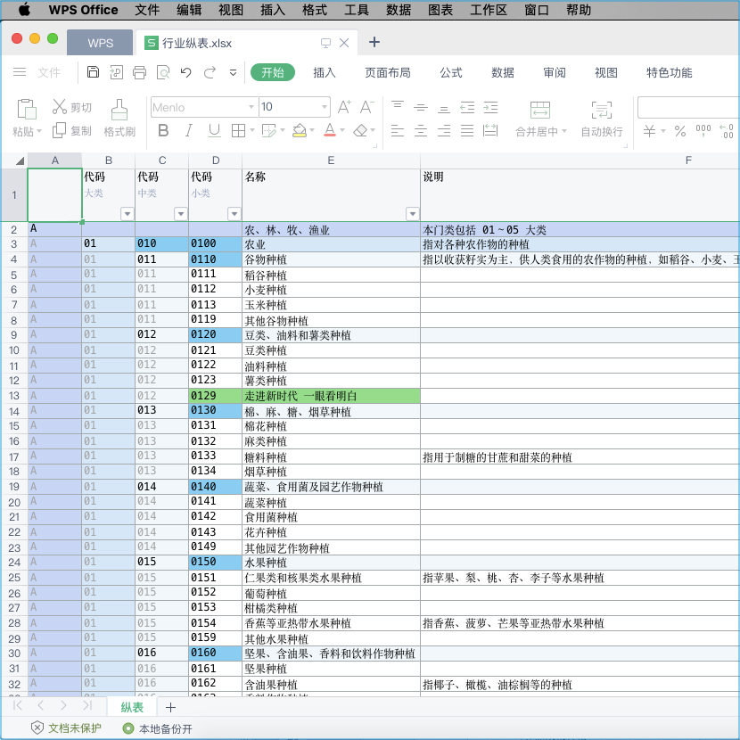
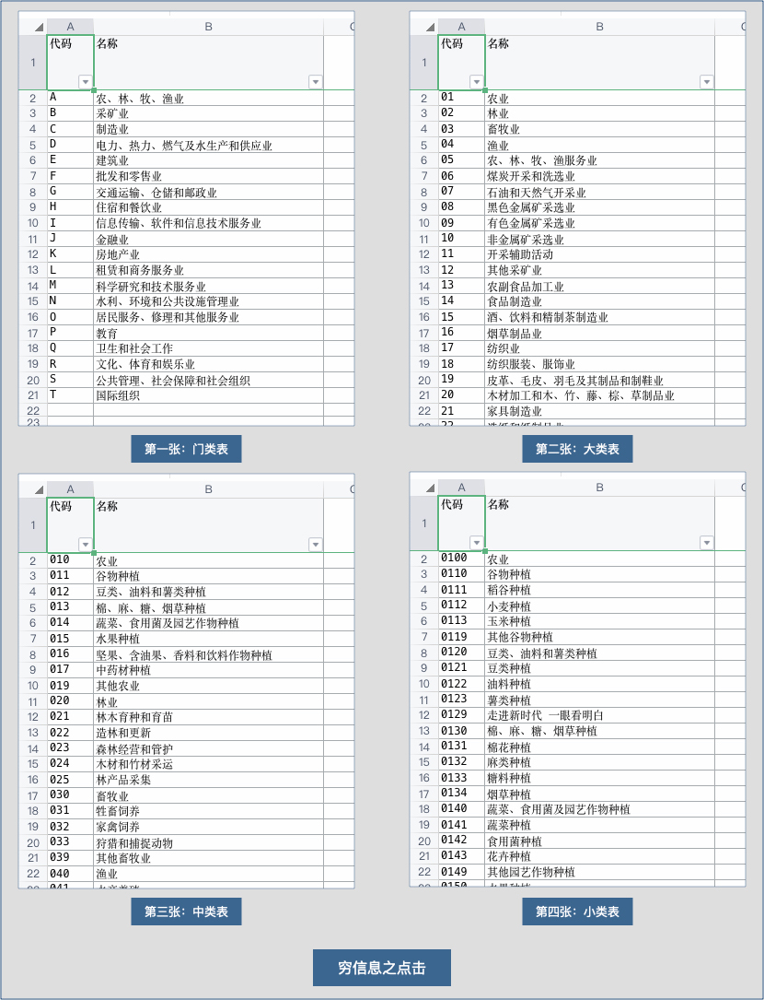
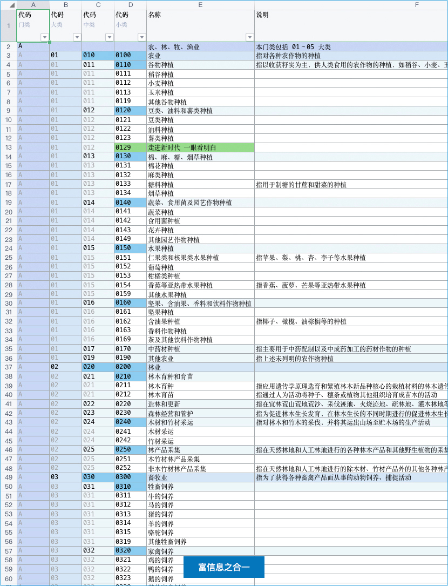

《关中战法》
简称：关中
传说
相传汉高祖刘邦定鼎天下后，将毕生征战心得著成此书，藏于未央宫密室，后辗转流入江湖，为各方势力所争夺
「楚亡汉兴之根要，不在共有之天时，不在封赏之人和，实在关中之地利！」
思想
系统根本不是数据库、代码那种表面上的东西，而是能和「现代环境」相配套的「现代作战体系」
两句话讲清楚这个「现代作战体系」
用云得到高级体系、得到资源整合、得到生态发展，这三条没有云你是很难靠自己做到和实现的
同时又依靠《关中战法》的文武表，《治粟兵法》的文件包，打造一条从云到本地的共享数据链
「认证机构信息管理系统」的「关中地利」是什么？
或者说是：认证机构的管理层，应该长期的、手握什么，才最靠谱？
答案是：重要数据集的、高维有颜色的、一眼看明白的文件：Excel
简单例子

这是真实的Excel，你可以自己下载看：行业纵表
它不是我手工弄的，它是我在系统中用「百川归宗」中的「一川归宗」，只按了1下、用了1秒种，轻而易举得到的
用 Excel 归档/备份 数据集的、高维的、有颜色的数据，效果非常好，但手工实现很不现实，必须是系统能刷的
这个表符合归档三要素：重要数据集、高维有颜色、一眼看明白
也就是说：行业这一块，只归档这一张表就够用的，其余的不用
可以把这张表设置「无相归宗」每天发到你指定的邮箱就可以了
或者你到系统中把「无相归宗」的全部归档表格按年月日去下载
大概是这样的文件体系：
/2025/01/01/基础代码/行业纵表.xlsx
/2025/01/01/基础代码/区划纵表.xlsx
/2025/01/01/基础代码/...
/2025/01/01/业务数据/体系纵表.xlsx
/2025/01/01/业务数据/产品纵表.xlsx
/2025/01/01/业务数据/...
...
/2025/01/02/基础代码/行业纵表.xlsx
/2025/01/02/基础代码/区划纵表.xlsx
/2025/01/02/基础代码/...
/2025/01/02/业务数据/体系纵表.xlsx
/2025/01/02/业务数据/产品纵表.xlsx
/2025/01/02/业务数据/...
...
/2025/01/03/基础代码/行业纵表.xlsx
/2025/01/03/基础代码/区划纵表.xlsx
/2025/01/03/基础代码/...
/2025/01/03/业务数据/体系纵表.xlsx
/2025/01/03/业务数据/产品纵表.xlsx
/2025/01/03/业务数据/...
...
实际的情况会有更高维的表格、更多数量的表格，按年月日系统每天按你自己设置的、按你自己神驭的，自动刷出
建议你买「两块」「移动固态硬盘」，好一点的：1000M/s+，容量2T、或者大一点，还有《治粟兵法》中的文件
系统每天自动发到你的「无限容量邮箱」里一份，每月月初下载上月整个归档的压缩包，放到「移动固态硬盘」里
为什么是「两块」「移动固态硬盘」？手动的raid1（更安全），就是每块硬盘都存一份，分两处放置，起容灾作用
这样你的「无限容量邮箱」有归档的高维表格（每天的），你的「移动固态硬盘」有归档的高维表格（按月打包的）
再配合《治粟兵法》所说的：粮仓存储单元的压缩包，实际上你本地有近乎完整的「数据文件体系」（按天整理的）
这种做法：
一般认知：你备份了数据文件
较高理解：你实现了每日归档
智者思维：你形成了追溯体系
追溯体系的用途
当对数据有疑惑之时，怎么办？
一般来讲：基础数据使用「千依」这个高级功能，就可以良好进行数据追溯：非常直接的看清楚数据是怎么变幻的
不过有时：事实摆在眼前，你也很难相信，你甚至非常确定是某些人动过的，上月我非常确定记得不是这个数据的
这很好办：从「无限容量邮箱」、「移动固态硬盘」里，把上月数据调出来，一看便知真相了，任何疑惑一查即破
凭什么「关中地利」是「Excel」，就不能是别的？
就凭四条，无可替代
第一条：数据级安全、蓝星级生态
神马叫作「数据级安全」？
自己动手，做个实验：
将上面下载的（或者任意你自己弄的Excel文件），更改后缀名：将后缀行业纵表.xlsx，改成为行业纵表.zip
解压（你电脑要安装有解压软件）得到文件夹：行业纵表/
用文本编辑器打开行业纵表/xl/sharedStrings.xml
自己看、自己琢磨：你的数据是不是都在这
「蓝星级生态」就是工具：
任何系统，都有工具：
Microsoft Excel、WPS Office、OpenOffice、Numbers（苹果）、甚至网页版的工具
第二条：是国际标准、万年能打开
这样做，万年能打开：
把行业纵表/xl/sharedStrings.xml当作数据库
把能打开Excel的工具当作小系统，蓝星有很多
很多年后，你还能打开它
这样做，30年就废了：
如果把程序级的 xxx.sql 真数据库当作数据库
如果把你牢牢握在手里的一套小源码当作小系统
很多年后，你真的那么确定：你还能打开它？
只需30年真会沧海桑田：那套代码的编程语言、数据库，至少都迭代十余版了，甚至可能都淘汰了
只怕今天的一键安装包，到那时会各种不兼容，就像你今天还想打开30年前MS-DOS里的东西一样
你在本地弄一套小系统，不可能永久长期使用，如果想依托这个备份重要数据，那只怕是不太科学
Excel的背后是OOXML，是国际开放文档标准：它相当于大家都知道数据结构，各自开发操作工具
如果可能：当然是把符合国际开放文档标准的、大家都知道数据结构的标准包，攥在手里更科学些标准包就是Excel文件，所有为标准包开发工具的开发人员， 都知道上述行业纵表/里的数据结构
30年后、50年后，作为百年机构，想看看当年的表格：
如果你手里攥着的是标准包，哪怕沧海桑田、甚至翻天覆地，蓝星之上、自有工具，你能轻松打开
如果你手里攥着的是程序级的 xxx.sql和已经不兼容的一套小源码，再想打开看看，只怕是不太容易
第三条：表格形式的、单一文件的
Excel不仅是表格形式的，而且是单一文件的，本质是一些文本文件的压缩包，这种相对独立非常好
只有这种数据级安全的， 国际标准的标准包，正好是表格的、相对独立好分离的，而且体量还不大
第四条：现代富信息、结构化表格
这种非常适合归档数据， 适合长期攥在手里，正常来讲唯一的缺陷就是：表格不容易很好的结构化
在以前使用穷信息系统， 就有这个致命缺陷，导致优势很难显现，使用富信息系统就没有这个问题
富信息系统的数据很容易做到：和Excel的结构化数据1:1对等，系统表格自然可以1:1变成Excel表格
这样手握Excel，握的就是数据集的、高维的、有颜色的表格，它是结构化表格，而不是碎片化表格
结构化表格远远好于碎片化表格，这极其的重要：「一大堆碎片化表格」比不了「一张结构化表格」
结构化表格只不过是富信息极其重要的部分体现，关于「富信息有多重要」可以单独作为题目来论
富信息有多重要
富信息系统相对于穷信息系统，主要的优势有：高维、上色、灵动、更多高级
| 类型\优势 | 高维 | 上色 | 灵动 | 更多高级 |
|---|---|---|---|---|
| 线上表格（武表） | 能够体现✅ | 能够体现✅ | 能够体现✅ | 能够体现✅ |
| 本地表格（文表、Excel） | 能够体现✅ | 能够体现✅ | 不能体现❌ | 不能体现❌ |
高维、上色的表格叫作「结构化表格」，没高维、没颜色的叫作「碎片化表格」
下面仅拿武表、文表都能体现的高维、上色举例子，感受下这个优势有多重要
你、穷信息：碎片化表格（没高维、没颜色）、看四张表：

我、富信息：结构化表格（高维、上色）、看一张表：

你点东点西，忘南忘北的，看四张表的数据，怎么可能比得上：我四合一只看一张表、高维有颜色的
你是在烧脑，脑力算高维，脑力想这个逻辑，而我烧的是CPU，我不费脑一眼看明白、而且是全局的
就算局部的，你得想半天，你还可能记错了，这只是简单例子，如果换成更复杂点的，那你更不行了
不怕不识货，就怕货比货，同样的一块数据、尤其是复杂数据，穷信息的和富信息的，根本就没法比
看穷信息表，极大脑力都浪费在结构化上了，你要想好好工作，脑子肯定在分析结构，在想逻辑关系
看富信息表，瞬间懂结构、秒清楚逻辑关系，脑力更多想正事，工作品质会显著提高，不用点一大堆
这还没算线上武表的灵动，以及更多的高级，富信息对穷信息：新旧文明的降维打击，现代科技碾压
穷信息富信息的系统哲学：
之所以四处点击，是因为信息碎而不一，以点击寻之，以脑力结构之、逻辑之，虽力不至，是以厌烦
之所以一页陶醉，是因为信息合而高维，以颜色明之，无脑力总揽之、全局之，不力即至，是以喜欢
齐之技击，不可遇魏之武卒；魏之武卒，不可遇秦之锐士
穷之点击，不可遇富之合一；富之合一，不可遇神驭归宗
啥意思：
任何一块：
穷之点击：做成穷信息点击的：零散很多表、一行一行的，靠人烧脑、将碎片化的信息合一
富之合一：穷信息点击比不上：是富信息的、合而为一的，不费脑力、看结构化的全面信息
神驭归宗：局部富信息比不上：全面富信息、任何表格都能用神驭自己调、用归宗1:1转文表
五绝凭什么是这五个，为什么万行是第六个：
九剑 + 飞针 = 结构化（视觉盛宴）
莫言 = 灵动（酷炫）
神驭 + 归宗 = 武转文（霸气神奇）
武转文（线上表格 1:1转为 本地Excel）：
想调整：用神驭自己调
随时转：一叶归宗、一川归宗、集剑归宗
每天转：无相归宗
第六神功：万行（豪情），自己控制吞吐量级
所有的这一切，全部都用AI高品质、快速实现！
文武表理论
对于认证机构现代信息数据，
长治久安的管理理念是什么？
持文用武 以武化文
文表武表
文表：区分「普通Excel」的命名，富信息的、结构化的，才叫文表
武表：线上的表， 富信息、能用东方神功中的武功，所以才叫武表
持文用武
持文：文表、Excel表，富信息的、结构化的，文文静静、攥在手里
用武：武表、线上表， 富信息的、结构化的，使用武功、灵动酷炫
以武化文
必须依靠系统，把武表1:1转化成文表，这样才能得到文表（富信息）
Excel表，纯靠手搓，也能弄成高维的，也能弄的有颜色，但不现实
用神驭（实调），把线上武表调好了，要哪列不要哪列，多少宽度
想要文表时，百川归宗，瞬间就好了，数据都是最新的，甚至无相
管理理念
无论文表，还是武表，内在现代核心都是：富信息（高维、有颜色）
不在于使用谁的系统，而是对管理理念的深度思考：「持文用武」
手里抓的：富信息化的Excel
线上用的：富信息化的表格
未来大趋势
信息化 -> 富信息化
从过去的信息化的小系统，换成新的富信息化的大系统，这就是未来大趋势！
以前是初步信息化，以及真正的变革点还没有到，所以老旧系统有三道封印：
不能高维、不能颜色、不能灵动
只有解除三道封印，只有重新上系统、重新武装，才是真正的现代系统形态！
现实世界
认证机构信息管理系统 中的 「富信息」
武侠世界
天下第一奇书
术语对照
| 兵法术语 | 系统术语 | 说明 | 大白话 |
|---|---|---|---|
| 关中 | 文表、持文 | 持富信息的Excel表格，家里的文表、文文静静，好看 | 反正家里非常安全 |
| 关外 | 武表、用武 | 用富信息的线上表格， 云上的武表，能用武功，好用 | 那就出去放开了打（使用云端） |
| 三秦 | 被限制 | 三秦：不能高维、不能颜色、不能灵动 | |
| 封印 | 被限制 | 封印：不能高维、不能颜色、不能灵动 | |
| 逐鹿中原 | 富信息化 | 谁能良好的转化「时代之力」，走向富信息，如大破三秦，赢得时代 | |
| 永居巴蜀 | 抱守穷信息 | 没有远见、无视「时代巨变」，还小页蛮点，如龙且渡水，必败无疑 |
作者笔记
2025年以后，认证机构上系统，还执着于穷信息，无视富信息趋势，这相当于什么？
就相当于没有血性、放弃进取、画地自限、永居巴蜀，天下大势已经和你没关系了。
2025年以后，富信息大战开启，就是看谁能良好蜕变为富信息系统，做到与时俱进！
初步信息化，相当于推翻暴秦，
抱守穷信息，相当于永居巴蜀，无非是一些表，点来点去的，不可能有什么大作为！
进取富信息，相当于离开巴蜀，相当于破三秦，富信息才是真正的系统、终成大器！
未来的系统，不可能是穷信息，一定是富信息的，这一点毫无疑问，天下大势已定！
如大破三秦：
格局为三秦所困：不能高维、不能颜色、不能灵动
只有破了这三秦，才是突破限制，一切才刚刚开始
如龙且渡水：
你一页、一页的，点来点去，还是很小的页（<1M）
别人的富信息表格，一个万行，数据量可能：100M
结构高维、颜色美感、信息密度、聚合灵动......
只怕是没一样比得了，别人对你是降维碾压......